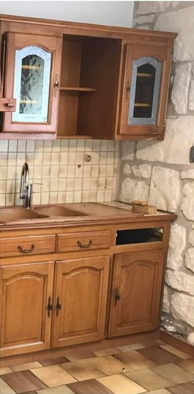
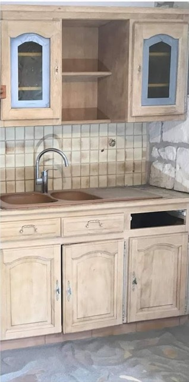
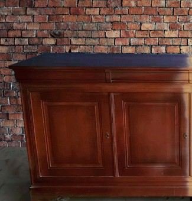
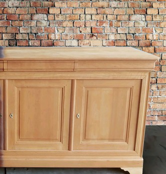
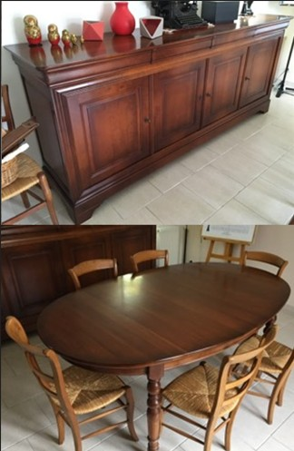
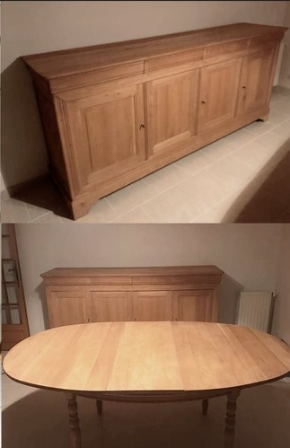

Le décapage d'un meuble consiste à retirer les couches de peinture, de vernis, de teinte ou de cire encrassée pour retrouver le bois nu. C'est le métier de Carole depuis 2013 : elle décape le mobilier ancien et moderne des particuliers, des antiquaires et des décorateurs d'Angers et de tout le Maine-et-Loire (49), avec une technique douce, l'aérogommage.
La technique
Comment se décape un meuble par aérogommage ?
L'aérogommage projette des granulés naturels sous air comprimé, à faible pression. Ils retirent les anciennes finitions sans attaquer les fibres du bois : le veinage, les moulures et les sculptures restent intacts. Aucun produit chimique, aucun rinçage : le bois ne gonfle pas et ne se tache pas.
Pour le décapage de meubles à Angers, c'est l'alternative douce aux décapants chimiques et au ponçage, souvent trop agressifs pour les meubles anciens.
Diagnostic
Carole examine le meuble : essence de bois, placage, nombre de couches, état des assemblages.
Décapage
Projection douce de granulés naturels, réglée selon le bois et les reliefs du meuble.
Préparation
Dépoussiérage et préparation de la surface, prête à recevoir une finition.
Finition
Cire, huile, vernis ou peinture : la finition que vous avez choisie.
Pour quels meubles ?
Quels meubles et quel mobilier peut-on décaper ?
Buffets, enfilades, vaisseliers
Les grands meubles de salle à manger retrouvent un bois clair, sans vernis jauni.
Commodes, secrétaires, chevets
Les meubles anciens, même moulurés ou sculptés, gardent tous leurs détails.
Tables et chaises
Plateaux vernis, pieds tournés, barreaux de chaises : chaque pièce est décapée sans être abîmée.
Armoires et bonnetières
Les armoires de famille, souvent teintées foncé, retrouvent un aspect plus actuel.
Meubles de cuisine en bois
Façades et caissons en bois massif changent de style sans être remplacés.
Meubles de métier et objets
Établis, meubles de mercerie, coffres, cadres, objets en bois précieux.
Meubles plaqués ou en marqueterie : le placage est une fine feuille de bois collée. Il se décape avec un réglage très doux, et pas toujours. Carole vous dit au diagnostic ce qui est possible pour votre meuble, avant de commencer.
Transformations
Avant / après : des meubles décapés à l'atelier

AVANT
APRÈS
AVANT
APRÈS
AVANT
APRÈSComparatif
Aérogommage, décapant chimique ou ponçage : que choisir pour un meuble ?
Faites glisser le tableau pour voir les autres colonnes →
| Aérogommage | Décapant chimique | Ponçage | |
|---|---|---|---|
| Produits chimiques | Aucun | Oui, avec rinçage | Aucun |
| Moulures et sculptures | Préservées | Difficiles à nettoyer dans les creux | Risque d'arrondir les reliefs |
| Effet sur le bois | Fibres et veinage préservés | Peut tacher ou faire lever les fibres | Enlève de la matière |
| Meubles plaqués | Possible avec un réglage très doux, selon le meuble | Risque de décoller le placage | Risque de traverser le placage |
| Après le décapage | Bois propre, prêt pour la finition | Résidus à neutraliser | Surface lisse, reliefs atténués |
Pour un meuble ancien ou mouluré, l'aérogommage est la solution la plus sûre. Sur un plateau plat très abîmé, un léger ponçage de finition peut compléter le décapage.
Conseils
Les erreurs à éviter avant de décaper un meuble
- Poncer un meuble mouluré : le papier abrasif arrondit les arêtes et efface peu à peu les sculptures.
- Mettre un décapant chimique sur un meuble plaqué : le produit et le rinçage peuvent faire gondoler ou décoller le placage.
- Décaper au pistolet à chaleur : la chaleur peut brûler ou noircir le bois, et faire fendre les panneaux.
- Poncer soi-même une vieille peinture : les peintures anciennes peuvent contenir du plomb. Évitez de faire de la poussière chez vous.
- Laisser les ferrures en place : poignées, serrures et entrées de clé se démontent avant tout décapage, pour être nettoyées à part.
Après le décapage
Quelle finition pour votre meuble décapé ?
Une fois décapé, le bois est nu : il faut le protéger. Le bon choix dépend de l'usage du meuble.
La cire
Aspect naturel et satiné, idéale pour les meubles anciens et les pièces peu exposées. Elle s'entretient facilement.
L'huile
Elle nourrit le bois et résiste mieux aux taches : un bon choix pour les plateaux de table et les meubles de cuisine.
Le vernis
La protection la plus résistante, pour les meubles très utilisés. Mat, satiné ou brillant.
La peinture
Pour changer de style : sur un bois propre et décapé, la peinture accroche durablement.
La patine
Un effet ancien ou blanchi qui laisse deviner le veinage du bois.
La teinte
Pour foncer ou harmoniser la couleur du bois avant la cire ou le vernis.
L'Atelier de Carole peut appliquer la finition de votre choix après le décapage : parlez-en lors de votre demande de devis.
Angers · Maine-et-Loire (49)
Décapage de meubles et de mobilier
dans tout le Maine-et-Loire (49)
L'atelier se trouve à Feneu, à une vingtaine de minutes d'Angers. Vous n'avez pas à vous déplacer : Carole vient chercher vos meubles chez vous et vous les rapporte une fois décapés. Elle travaille pour les particuliers, les antiquaires et les décorateurs d'Angers et de tout le Maine-et-Loire.
Envoyez une photo
Décrivez votre meuble et ajoutez une ou deux photos dans le formulaire de contact.
Recevez votre devis
Carole vous répond avec un devis personnalisé, gratuit et sans engagement.
Enlèvement et retour
Carole vient chercher votre meuble chez vous, le décape à l'atelier et vous le rapporte.
Vos questions
Questions fréquentes sur le décapage de meubles
Combien coûte le décapage d'un meuble à Angers ?
Le prix dépend de la taille du meuble, du nombre de couches à retirer et de ses reliefs. Envoyez une ou deux photos : Carole vous fait un devis gratuit et sans engagement.
L'aérogommage abîme-t-il le bois ?
Non, quand il est bien réglé. La pression et les granulés sont adaptés à chaque meuble après un diagnostic : les fibres, le veinage, les moulures et les sculptures sont préservés.
Peut-on décaper un meuble plaqué ou en marqueterie ?
Souvent oui, avec un réglage très doux, mais pas toujours : tout dépend de l'épaisseur et de l'état du placage. Carole vous le dit au diagnostic, avant de commencer.
Le meuble peut-il être repeint juste après le décapage ?
Oui. Une fois décapé et dépoussiéré, le bois est prêt à recevoir une peinture, un vernis, une huile ou une cire. L'atelier peut aussi réaliser la finition de votre choix.
Quels meubles décapez-vous dans le Maine-et-Loire ?
Buffets, commodes, armoires, tables, chaises, meubles de cuisine en bois, meubles de métier… pour des particuliers, des antiquaires et des décorateurs d'Angers et de tout le Maine-et-Loire (49).
Venez-vous chercher les meubles à domicile ?
Oui. Carole se déplace pour récupérer votre meuble chez vous et vous le rapporter une fois décapé. La date et les détails sont fixés avec le devis.
Où se trouve l'atelier ?
À Feneu, près d'Angers. Vous n'avez pas besoin de vous déplacer : Carole vient chercher votre meuble et vous le rapporte. Appelez-la au 06 95 47 32 33 ou écrivez-lui avec le formulaire de contact.